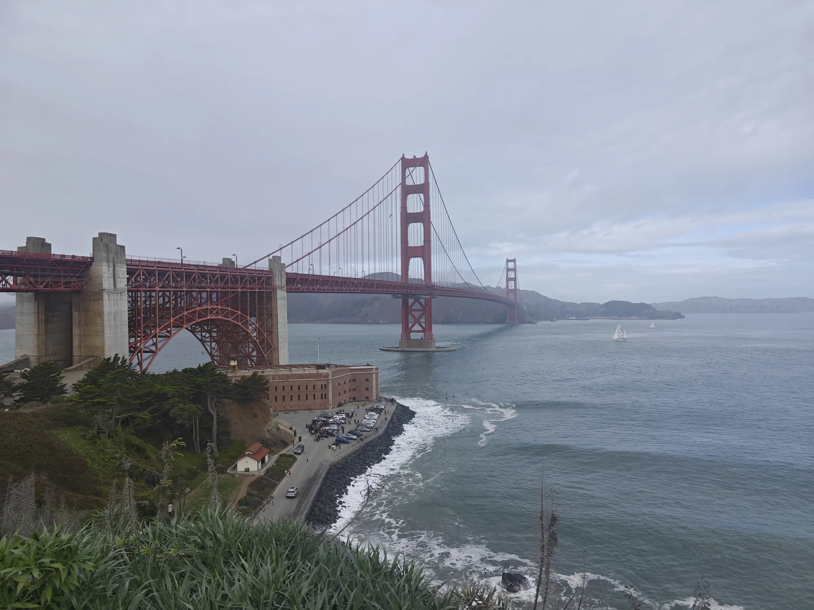

SAN FRANCISCO & BERKELEY
旧金山与伯克利
乘海岸星光号北上，走过伯克利校园、旧金山街巷、金门大桥与海湾。
2025.10.23 — 10.27海岸星光号 · BART · 公交 · Uber · 步行
乘海岸星光号北上，走过伯克利校园、旧金山街巷、金门大桥与海湾。
放大地图查看照片
交通路线航班铁路 / 轨道交通巴士打车 / 包车 / 团体巴士
公共交通按线路或途经站点绘制，均为行程示意；未记下的具体班次留空。航班连线非实际飞行轨迹。
每日记录 5 天
DAY 01
海岸星光号
Amtrak Coast Starlight从洛杉矶联合车站乘海岸星光号北上，经圣巴巴拉与加州中央海岸，夜间抵达埃默里维尔。
→→→
DAY 02
伯克利校园
公交＋步行在伯克利校园的钟楼、广场、图书馆与物理楼之间漫步。
DAY 03
旧金山市中心 · 唐人街
BART＋步行从伯克利一侧进入旧金山市中心，穿过起伏的街道，沿唐人街走到夜色中的联合广场。
→→
DAY 04
金门大桥 · 海港 · 双子峰
公交＋Uber＋步行上午到金门大桥南侧，随后走过39号码头、渔人码头、九曲花街与北滩，傍晚在双子峰俯瞰城市。随后乘 Uber 回 Union Square 一带。
→→→→→→
DAY 05
机场 · 返程
BART＋航班乘 BART 和机场 AirTrain 前往旧金山机场，飞回南加州。
→
海岸星光号出发前的联合车站10.23 · 08:39 洛杉矶联合车站沿途停靠圣巴巴拉10.23 · 12:09 圣巴巴拉沿线车窗外的加州海岸10.23 · 13:12 加州中央海岸铁路沿线列车沿途的日落10.23 · 18:15 加州中央海岸铁路沿线在观景车厢看海10.23 · 18:29 加州中央海岸铁路沿线夜间抵达埃默里维尔站10.23 · 21:39 埃默里维尔站走近伯克利的钟楼10.24 · 11:32 加州大学伯克利分校校园里安静的树荫与小径10.24 · 11:54 加州大学伯克利分校伯克利校园广场10.24 · 13:28 加州大学伯克利分校阳光下的校园建筑10.24 · 13:40 加州大学伯克利分校物理楼外的庭院10.24 · 17:30 加州大学伯克利分校旧金山起伏的街道10.25 · 17:23 联合广场与市中心唐人街的龙门10.25 · 17:49 旧金山唐人街挂满灯笼的唐人街10.25 · 17:56 旧金山唐人街在唐人街吃一顿晚饭10.25 · 18:40 旧金山唐人街联合广场旁的夜色10.25 · 19:31 联合广场与市中心阴天里的金门大桥10.26 · 11:04 金门大桥南侧从海边仰望大桥10.26 · 11:26 金门大桥南侧39 号码头的旋转木马10.26 · 12:45 39 号码头远处雾中的恶魔岛10.26 · 14:06 渔人码头渔人码头的海滨步道10.26 · 14:26 渔人码头海港街边的雕像10.26 · 14:39 渔人码头九曲花街10.26 · 14:55 九曲花街北滩的圣伯多禄圣保禄教堂10.26 · 15:45 北滩街区双子峰上俯瞰旧金山10.26 · 18:25 双子峰城市灯光渐渐亮起10.26 · 18:45 双子峰晚饭后的甜点10.26 · 20:27 联合广场与市中心返程早晨的可颂10.27 · 08:34 联合广场与市中心旧金山机场 AirTrain10.27 · 09:18 旧金山机场抵达安大略机场10.27 · 12:33 安大略机场 暂无照片。
NOTES FROM THE ROAD
旅行随记
SAN FRANCISCO & BERKELEY
活力大湾区，魅力新加州
从洛杉矶到旧金山，十二个小时的火车摇摇晃晃，中间还夹杂着不少没有信号的路段。本以为这会是一场与世隔绝的、仅与沙滩与海洋相伴的孤独之旅，但并非如此。
海岸星光号的观景车厢是公用的，任何人都可以前往观景车厢驻足观赏，于是旅途上的人们不约而同聚集于此。但再美的海景也难免令人心生倦意，无信号的旅程中，与身边的人交谈似乎成了唯一的消遣。一开始坐在我边上的是一队来自台湾的旅行团，我们一起欣赏着海边的景色，从美国旅行聊到各自的家乡；日落时分又遇到了一位从广东来西雅图工作的姐姐，聊天之余竟发现彼此共享着许多相似的兴趣和审美。这样热烈的社交氛围还体现在用餐时间，列车长在午饭开始的时候向大家介绍他们的餐车：需要和陌生人拼一张桌，结交新的朋友，称其为“海岸星光号”的特色之一。
湾区的气候可以说是我所有去过的地方中最宜居的之一。同为地中海气候，湾区不像南加某城，到十一月仍保持着三十多度的高温。漫步在金门大桥公园，阵阵海风吹来，即使天空下着小雨，也并不会感到寒冷。雾中的金门大桥虽没有晴天那么壮观，但朦胧中若隐若现的彼岸，也颇有另一种韵味。
曾经看到过一种说法，旧金山城区的路网设计和洛杉矶近乎一样，但旧金山的设计极其失败。同样是格子城，旧金山把笔直的路网直接盖在了起起伏伏的城区，罔顾任何地形的坡度。事实也的确如此，虽然城区的路都是笔直的，却能常常看到陡峭的路段，爬起来都颇为费劲。但这也造就了旧金山独特的风景线，颇有种“北美重庆”之感，只是周围的建筑更古典。
更具古典气息的还有伯克利的校园。漫步其中，浓厚的学术氛围和自由气息扑面而来，像一座巨大的博物馆，展示着她曾经获得过的成就。甚至在校园的最中心，有专门为诺贝尔奖得主预留的车位。很难想象如此古典风格的建筑中，孕育出的是现代最尖端的科技。在古典立面包围的物理楼其中某一间不起眼的办公室门口，奥本海默的名字悄悄地刻在了门牌上。只可惜没有机会能够亲眼见证原子弹之父的工作场景，只是在门口留下了一张照片便匆匆离开。
在湾区的每一天似乎都在向我展示着这片土地的包容和活力，各种肤色的人都在这里和谐地生活在一起，也许这也是湾区魅力的一部分吧。